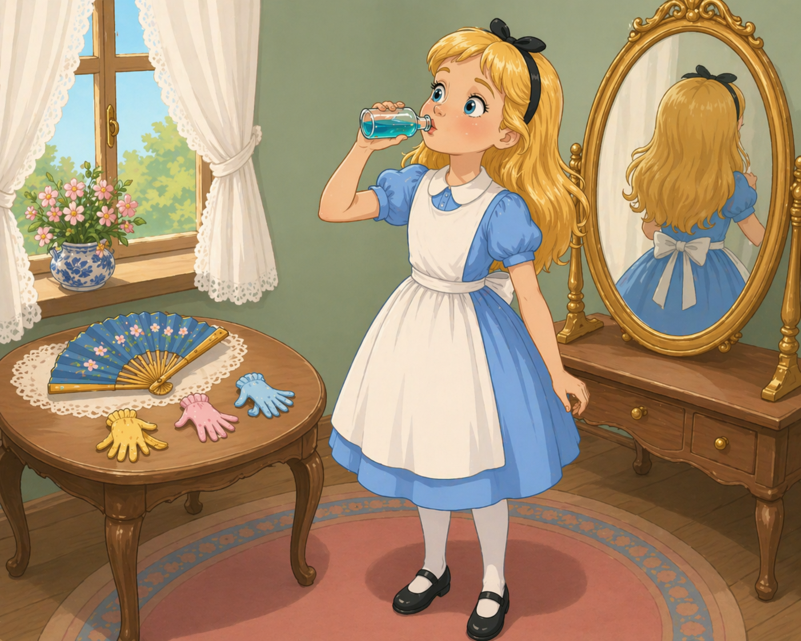
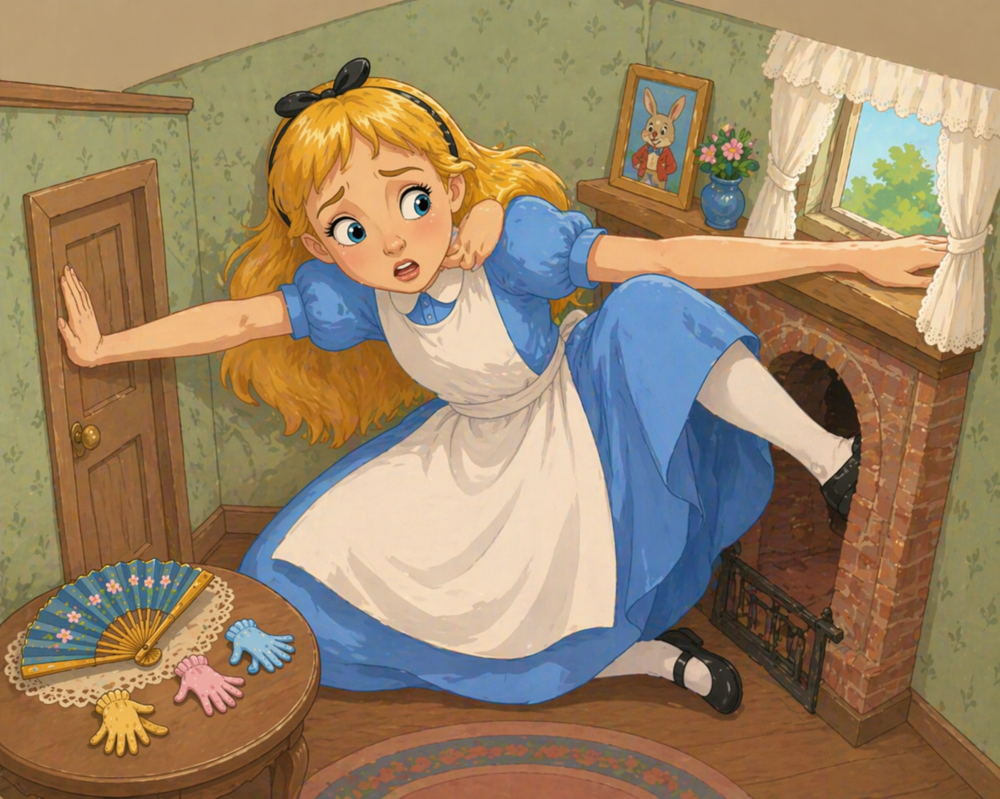
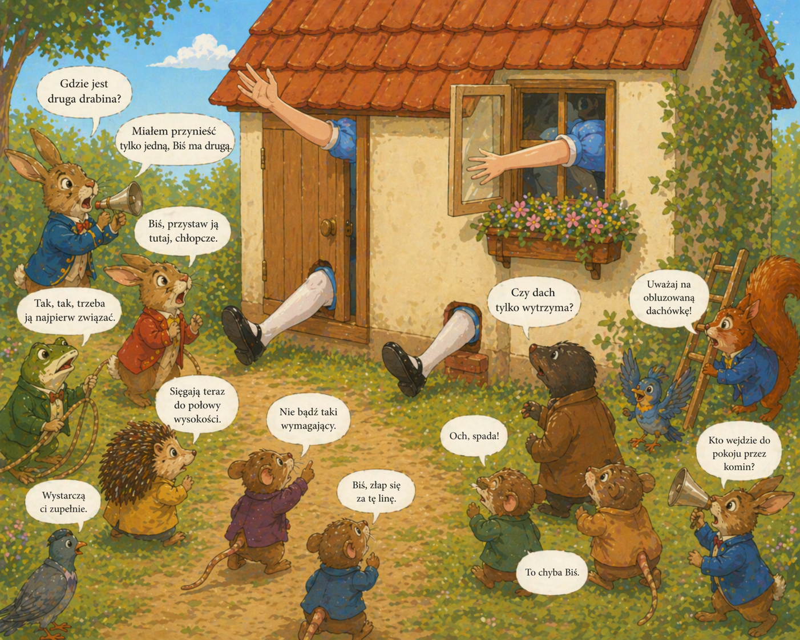
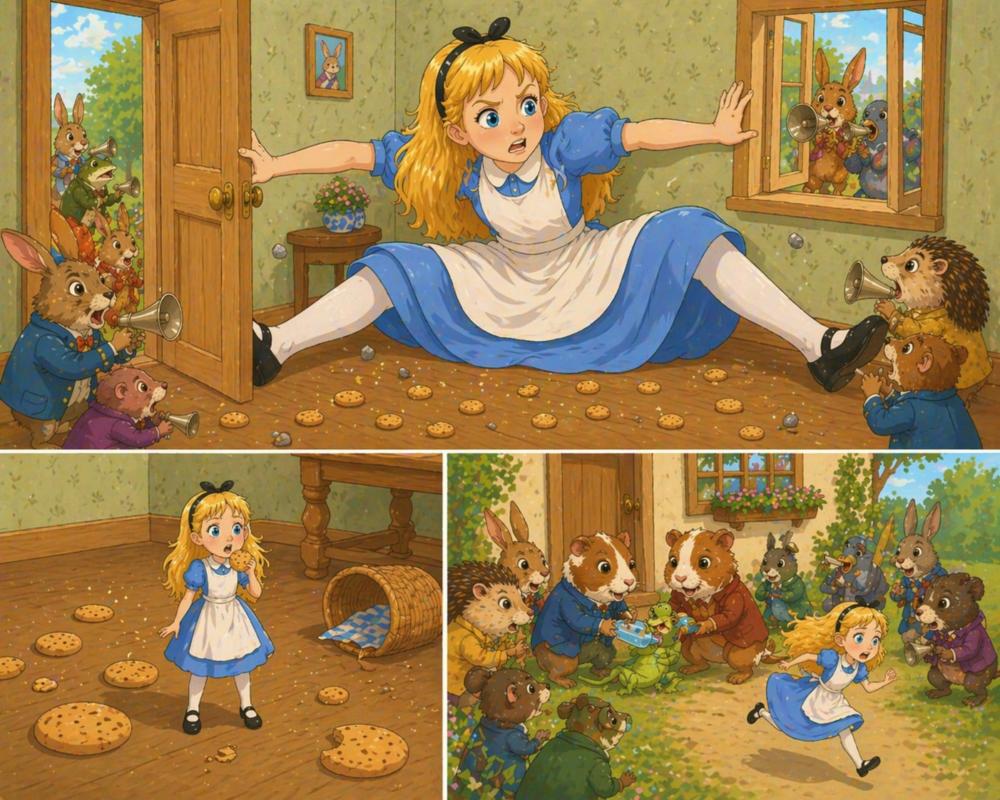
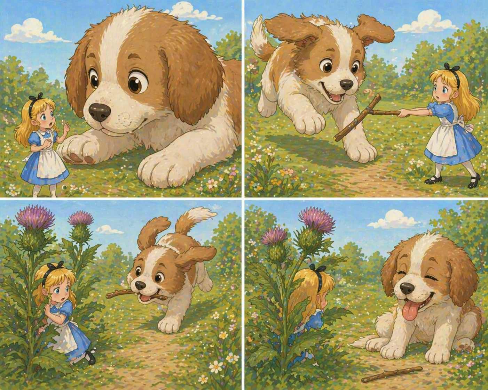
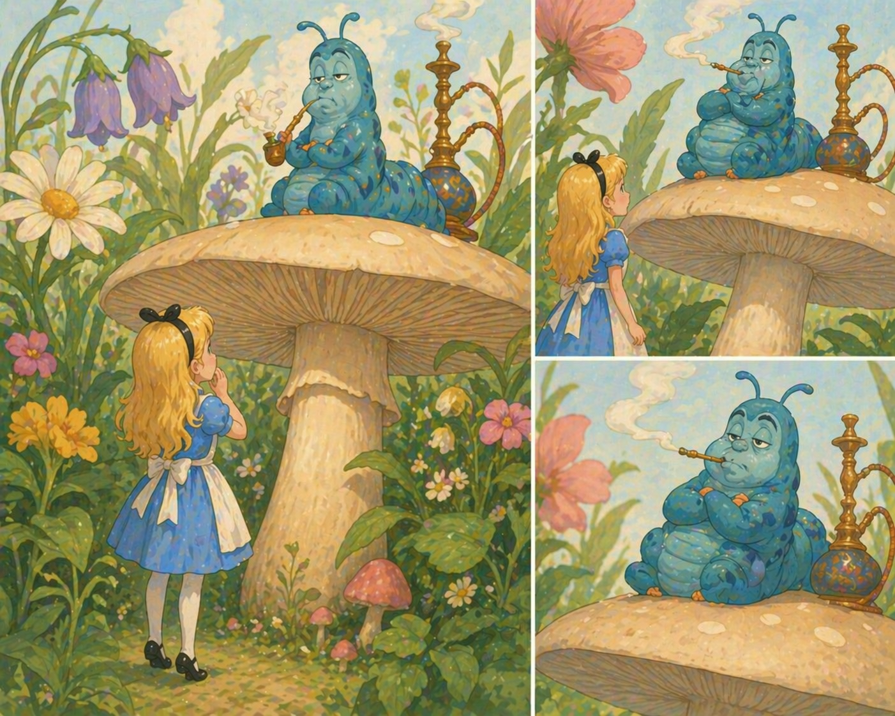

🎧 Слушай главу
Był to raz jeszcze Biały Królik. Szedł powoli i rozglądał się trwożliwie dokoła, jak gdyby czegoś szukając. Alicja usłyszała, jak mamrotał do siebie:
- O Księżno, Księżno! Na moje najdroższe łapy! Na moje futerko i bokobrody, każesz mnie na pewno ściąć! Gdzie ja mogłem je zapodziać, nieszczęsny?
Alicja odgadła, że Królik szuka wachlarza i pary białych, skórkowych rękawiczek. Zaraz więc zaczęła rozglądać się za nimi, ale na próżno. Nic zresztą dziwnego, bo wszystko zmieniło się nie do poznania od czasu, kiedy Alicja pływała w sadzawce. Sala ze szklanym stolikiem i maluteńkimi drzwiczkami dawno już znikła.
Nagle Biały Królik dostrzegł Alicję i zawołał gniewnie:
- Co ty tu robisz, Marianno? Biegnij w te pędy do domu i przynieś im parę rękawiczek i wachlarz. Ale już!

Alicja była tak przerażona, że nie próbowała nawet wyjaśnić nieporozumienia i pobiegła natychmiast we wskazanym przez Królika kierunku.
- Wziął mnie widocznie za swoją pokojówkę - mówiła biegnąc. - Będzie na pewno zdziwiony, kiedy dowie się, kim jestem! Ale ja przyniosę mu te jego rękawiczki i wachlarz, jeżeli je oczywiście znajdę. - Wtem ujrzała mały domek, na którego drzwiach lśniła mosiężna tabliczka z napisem: B. KRÓLIK. Weszła bez pukania i pobiegła prędziutko na górę, ponieważ bała się, że spotka prawdziwą Mariannę, a ta wyprosi ją z domu, zanim znajdzie wachlarz i rękawiczki.
- Jakie to dziwne - powiedziała do siebie Alicja - biegać na posyłki dla Królika! Może niedługo i Jacek będzie dawał mi podobne zlecenia! - I zaczęła wyobrażać sobie, jak to się będzie odbywało: "Alicjo! Chodź tu natychmiast i przygotuj się do spaceru!" "Zaraz, nianiu, dopóki nie wróci Jacek muszę pilnować mysiej norki, żeby myszka mu nie uciekła"! - Tak, tak, tylko wątpię, czy pozwolono by Jackowi pozostać u nas w domu, gdyby zaczął się tak rządzić i rozkazywać ludziom.
Tymczasem Alicja znalazła się w małej, schludnej izdebce. Na stoliku pod oknem zauważyła wachlarzyk i trzy pary maleńkich rękawiczek. Chciała już wyjść z pokoju ze swoją zdobyczą, kiedy wzrok jej padł na stojącą obok lustra buleteczkę. Tym razem nie była nie niej naklejki z napisem: Wypij mnie. Alicja odkorkowała ją jednak i przyłożyła do ust.
"Wiem - rzekła do siebie - że musi się zawsze cos wydarzyć, gdy cokolwiek zjem albo wypiję. Chcę przekonać się, co stanie się ze mną po wypiciu tego płynu. Mam nadzieję, że urosnę, bo doprawdy znudziło mi się już być takim malutkim stworzonkiem".

Życzenie Alicji spełniło się szybciej, niż mogła przypuszczać.
Zanim wypiła połowę, uderzyła głową o sufit i musiała się schylić, aby zmieścić się w pokoiku. Odstawiła więc szybko buteleczkę, mówiąc do siebie:
"To w zupełności wystarczy. Mam nadzieję, że nie będę więcej rosła, bo i tak nie mogę już wydostać się przez drzwi. Ach, po co wypiłam tego tak dużo?"
Niestety, było już za późno. Alicja rosła, rosła bez przerwy i wkrótce była już zmuszona uklęknąć. Po chwili i na to było za mało miejsca. Spróbowała więc położyć się z jedną ręką opartą o drzwi, drugą zaś owiniętą dokoła szyi. Robiło się coraz ciaśniej. Alicja musiała więc wyciągnąć jedną rękę przez okno, jedną zaś nogę wsunąć do komina. "To wszystko, co mogę zrobić - pomyślała. - Co się teraz ze mną stanie?"

Szczęśliwie zawartość buteleczki przestała już działać i Alicja nie rosła już dalej. Czuła się jednak tak marnie i tak mało widziała możliwości wydostania się z pokoiku, że była doprawdy bardzo nieszczęśliwa.
"O wiele lepiej działo mi się w domu - pomyślała z żalem. - Tam przynajmniej człowiek nie rósł wciąż i nie malał na przemian i nie był narażony na zuchwalstwa ze strony królików i myszy. Bodajbym nigdy nie wchodziła w króliczą norę, chociaż... chociaż te przygody są, prawdę mówiąc, ciekawe. Kiedy czytałam bajki, zdawało mi się, że coś podobnego nie może przydarzyć się nikomu, a oto sama przeżywam bajkę najdziwniejszą w świecie! Doprawdy, ktoś powinien napisać książkę o mnie. Albo ja sama napiszę, kiedy urosnę... Ale przecież ja właśnie urosłam - uprzytomniła sobie Alicja - i nie mogę już więcej rosnąć, przynajmniej w tym domu... Lecz w takim razie nie będę już nigdy starsza! Z jednej strony wydaje się to dość wygodne - nigdy nie być starą - ale kiedy pomyślę, że będę miała przez całe życie lekcje do odrabiania! Nie, to im się wcale nie uśmiecha!"
"Och, ty głuptasku - powiedziała sobie po chwili - jakżebyś mogła odrabiać lekcje tutaj? Ledwie starczy tu miejsca dla ciebie, a gdzie zmieściłyby się twoje podręczniki i zeszyty?"
Alicja zabawiała się tak przez parę minut stawianiem pytań i dawaniem na nie odpowiedzi, z czego wywiązała się cała rozmowa, gdy nagle usłyszała na zewnątrz jakiś piskliwy głosik:
- Marianno! Marianno! Podaj mi w tej chwili moje rękawiczki! - Następnie dało się słyszeć szybkie stąpanie łapek po schodach. Nie ulegało wątpliwości, że to Biały Królik wraca do swego mieszkania. Alicja zapomniała widocznie o tym, że była teraz z tysiąc razy większa od Królika, bo zaczęła dygotać ze strachu, a wraz z nią zatrząsł się cały domek.
Biały Królik usiłował otworzyć drzwi. Ponieważ jednak otwierały się one od wewnątrz, okazało się to niemożliwe. Alicja słyszała, jak powiedział do siebie:
- Muszę pójść naokoło i dostać się do środka oknem.
"To ci się także nie uda" - pomyślała Alicja.
Poczekała chwilę, aż Królik zdąży obejść swój domek, i trzepnęła nagle palcami wysuniętej za okno ręki. Choć nie dotknęła niczego, rozległ się cichy pisk i odgłos upadku, a potem brzęk tłuczonego szkła. Alicja wywnioskowała, że Królik wpaść musiał w inspekty albo w coś podobnego. Następnie usłyszała gniewny głosik:
- Bazyli, Bazyli, gdzie jesteś? - na co jakiś nieznany głos odpowiedział:
- Tutaj jestem, jaśnie panie! Kopię jabłka, proszę jaśnie pana.
- Kopie jabłka, dajmy na to, że kopie - rzekł Królik z wściekłością. - Na razie jednak chodź tutaj i pomóż mi się stąd wydostać! (Znów brzęk tłuczonego szkła).
- Powiedz mi, Bazyli, co tam jest w oknie?
- Ani chybi ręka, proszę jaśnie pana.
- Ręka, ty ośle? Czyś kiedy widział rękę takiej wielkości? Przecież ona wypełnia całe okno!
- Tak jest, proszę jaśnie pana, ale to jednak ręka.
- Tak czy inaczej, ona nie ma tutaj nic do roboty. Idź i usuń ją.
Nastąpiła długa cisza, w czasie której do uszu Alicji dochodziły tylko jakieś szepty. Zdołała jedynie zrozumieć, że Bazyli usiłował się wykręcić od wykonania rozkazu, Królik zaś komenderował: "Ruszaj, ty tchórzu!"
Na wszelki wypadek Alicja raz jeszcze trzepnęła palcami. Tym razem usłyszała aż dwa piski i głośniejszy brzęk tłuczonego szkła. "Musi tam być sporo tych inspektów - pomyślała. - Ciekawe, co oni teraz postanowią. Jeśli idzie o usunięcie mnie stąd, to byłabym bardzo rada, gdyby im się to udało. Pozostawanie tutaj dłużej zupełnie mnie nie bawi".
Minęło znowu trochę czasu. Alicja usłyszała na koniec jakby dudnienie kół maleńkich furmanek, a potem mnóstwo przekrzykujących się głosów. Rozróżniała słowa: "Gdzie jest druga drabina?" "Miałem przynieść tylko jedną, Biś ma drugą". "Biś, przystaw ją tutaj, chłopcze. Oprzyj ją o ten róg". "Tak, tak, trzeba ją najpierw związać". "Sięgają teraz do połowy wysokości". "Wystarczą ci zupełnie". "Nie bądź taki wymagający". "Biś, złap się za tę linę". "Czy dach tylko wytrzyma?" "Uważaj na obluzowaną dachówkę!" "Och, spada!" (Głośny huk). "Kto ją zrzucił?" "To chyba Biś". "Kto wejdzie do pokoju przez komin?" "Nie, ja nie". "Właśnie, że ty!" "A właśnie, że nie ja!" "Biś wejdzie przez komin". "Słuchaj, Biś, jaśnie pan mówi, że ty masz wejść prze komin!"

"Ach, więc to Bis ma wejść prze komin - rzekła do siebie Alicja. - Wygląda na to, że oni wszystko zwalają na tego Bisia. Nie chciałabym być na jego miejscu. Ten komin jest bardzo wąski, a poza tym myślę, że będę mogła wyrzucić go stamtąd nogą".
Alicja wystawiła nogę tak daleko, jak tylko mogła, i czekała, dopóki zwierzątko(nie wiedziała dokładnie jakie) nie zacznie hałasować u wylotu komina. Kiedy usłyszała odgłosy schodzenia, powiedziała sobie: "To musi być Biś" - i zrobiła gwałtowny ruch uwięzioną w kominie nogą, po czym czekała, co będzie dalej.
Najpierw usłyszała cały chór głosów wołających w podnieceniu "To Biś wraca!" Potem głos Królika: "Trzymajcie go, wy przy żywopłocie!" Następnie, po chwili ciszy, nowy chór głosów: "Podnieście mu głowę". "Dajcie mu łyk wódki". "Nie potrząsajcie nim". "Co z tobą, przyjacielu?" "Co ci się stało?" "Opowiedz nam o wszystkim".
Na koniec rozległ się słaby piskliwy głosik. ("To musi być Biś" - pomyślała Alicja).
- Naprawdę, ja nic nie wiem, tak samo jak i wy; teraz mi lepiej - jestem nazbyt wstrząśnięty, by opowiadać, wiem tylko, że coś wyskoczyło na mnie i pofrunąłem w górę jak rakieta.
- Tak było, właśnie tak - zgodzili się słuchacze.
- Musimy spalić ten dom - zawyrokował Królik.
Usłyszawszy to Alicja wrzasnęła na cały głos:
- Jeśli to zrobicie, poszczuję na was Jacka!
Nastąpiła zupełna cisza. Alicja pomyślała sobie: "Ciekawe, co oni teraz zrobią. Gdyby mieli trochę oleju w głowach, zdjęliby dach".
Po dwóch minutach rozpoczęło się nowe bieganie i Alicja usłyszała głos Królika:
- Jedna beczułka powinna wystarczyć na początek.
"Beczułka czego? - pomyślała Alicja. Ale w tej chwili w okno uderzył grad małych kamyczków, z których część ugodziła ją w twarz. Doszła więc do wniosku, że musi położyć kres temu atakowi, i zawołała jak najgroźniejszym głosem:
- Radzę wam przestać w tej chwili! - co spowodowało ponownie głuchą ciszę.
Alicja zauważyła ze zdumieniem, że leżące na podłodze kamyczki przemieniają się w maleńkie ciasteczka. I nagle przyszło jej do głowy, że zjedzenie jednego z ciasteczek powinno jakoś wpłynąć na jej wzrost. "Ponieważ nie mogę już chyba urosnąć - pomyślała - więc przypuszczam, że zrobię się mniejsza".

Nie zwlekając długo, zjadła ciasteczko i stwierdziła z zachwytem, że gwałtownie maleje. Kiedy była już tam mała, że mogła przejść przez drzwi, wybiegła szybko z domu, przed którym zebrała się cała gromada ptaków i innych zwierzątek. Pośrodku zauważyła Bisia (okazało się, że to mała jaszczurka) podtrzymywanego przez dwie świnki morskie, które poiły go płynem z jakiejś buteleczki. Wszystkie zwierzęta rzuciły się ku Alicji, ale ona uciekła, co sił w nogach. Wkrótce znalazła się w gęstym lesie, gdzie poczuła się wreszcie bezpieczna.
- Pierwsza rzecz, o którą powinnam się postarać, to odzyskanie mego prawdziwego wzrostu - rzekła Alicja chodząc po lesie. - A poza tym muszę wreszcie dostać się do tego przepięknego ogrodu. Sądzę, że to będzie właściwy plan działania na najbliższy czas.
Plan ten był prosty i pociągający. Alicja nie miała jednak pojęcia, jak zabrać się do jego wykonania. Błąkając się między drzewami posłyszała nagle nad głową głośne szczeknięcie.
Olbrzymie szczenię przypatrywało jej się wielkimi, okrągłymi oczami i łagodnie trącało ją łapą.
- Śliczne, małe biedactwo - rzekła Alicja możliwie jak najsłodszym głosem i usiłowała zagwizdać. Była przy tym śmiertelnie przerażona, że szczenię jest głodne i że pożre ją mimo jej słodkich słówek.
Nie wiedząc, co czynić, wyciągnęła ku pieskowi jakiś patyczek. Szczeniak odbił się od ziemi wszystkimi czterema łapami naraz, podskoczył w górę na znak zachwytu, szczeknął i rzucił się na patyk z taką miną, jak gdyby miał zamiar zmiażdżyć go jednym kłapnięciem zębów. Tymczasem Alicja ukryła się za wielkim ostem, przez co uniknęła stratowania. Szczeniak rzucił się znowu na patyk, fiknął koziołka, podskoczył kilkakrotnie do góry, a potem cofał się bardzo daleko w tył i znów pędził naprzód, szczekając bezustannie przez cały czas. Na koniec przysiadł ciężko dysząc, z wywieszonym językiem i przymrużonymi ślepiami.

Alicja skorzystała z tej sposobności, aby się wymknąć. Biegła bardzo długo aż do utraty sił i zatrzymała się dopiero wówczas, gdy szczekanie psa już ledwo dochodziło z oddali.
"To przemiły szczeniak - pomyślała opierając się o jaskier i wachlując jednym z jego liści. - Bardzo bym chciała z nim pobaraszkować, gdybym tylko była trochę większa. Mój Boże! Zapomniałam całkiem, że muszę na nowo urosnąć. Ale jak się do tego zabrać? Przypuszczam, że muszę coś zjeść albo wypić, ale co - w tym sęk!"
Alicja rozejrzała się dokoła, ale nie zauważyła poza kwiatami i trawą nic godnego uwagi. W pobliżu stał duży grzyb, mniej więcej jej wysokości. Kiedy przyjrzałam mu się dokładnie od dołu i ze wszystkich możliwych stron, przyszło jej na myśl, że warto by również zobaczyć, co dzieje się z wierzchu na kapeluszu grzyba.
Wspięła się na paluszki i natychmiast zauważyła ogromnego, niebieskiego pana Gąsienicę. Siedział wygodnie z rękami skrzyżowanymi na piersiach i pykał wolno i uroczyście z olbrzymiej fajki, nie zwracając najmniejszej uwagi na otoczenie.
